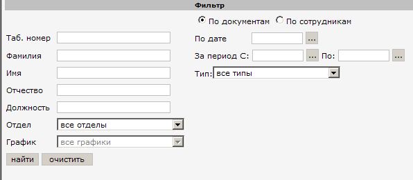
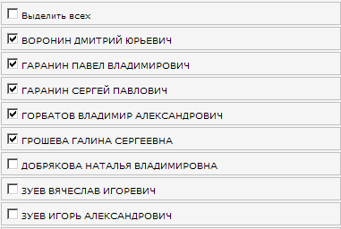
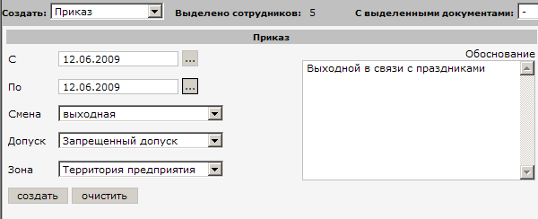
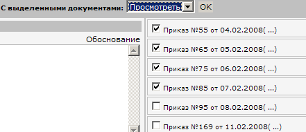

|
Что бы создать документ, сначала нужно отобрать сотрудника (-ов) с помощью фильтра.

Введите один или несколько параметров фильтра, установите преключатель "По сотрудникам" и нажмите
кнопку "Найти".
Слева отобразится список найденых сотрудников:

Выделить интересующих Вас сотрудников галочками.
Затем нужно создать документ, для этого выберите нужный Вам тип документа, заполните необходимые поля.

Нажмите кнопку "Создать".
Если Вы хотите найти ранее созданные документы, то в фильтре установите переключать "По документам", укажите период
дат на который создавались эти документы и/или информацию о сотрудниках на которых создавались документы
и нажмите "Найти".
После отобразится список найденных документов:

Выделите нужные документы галочками, затем в списке "Выделенными документами:" выбирите удалить или просмотреть
и нажмите кнопку "Ok".
|